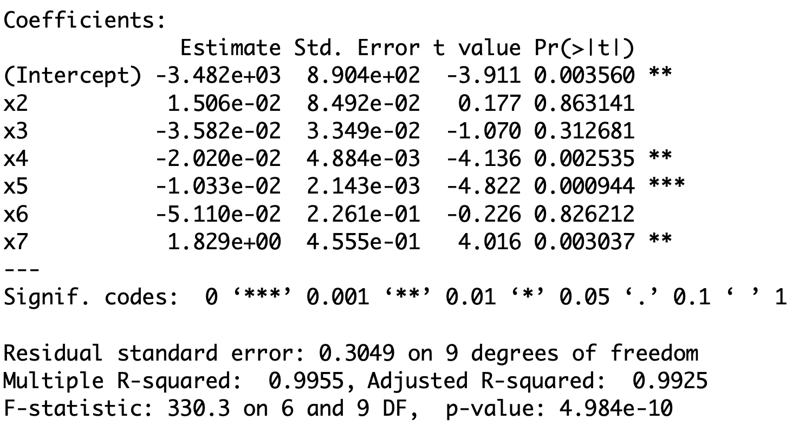

Statistical Models
Lecture 11
Lecture 11:
Violation of regression
assumptions
Outline of Lecture 11
- Regression modelling assumptions
- Heteroscedasticity
- Autocorrelation
- Multicollinearity
- Stepwise regression and overfitting
- Dummy variable regression models
Part 1:
Regression assumptions
Regression modelling assumptions
In Lecture 9 we have introduced the general linear regression model
Y_i = \beta_1 z_{i1} + \beta_2 z_{i2} + \ldots + \beta_p z_{ip} + \varepsilon_i
- There are p predictor random variables
Z_1 \, , \,\, \ldots \, , \, Z_p
- Y_i is the conditional distribution
Y | Z_1 = z_{i1} \,, \,\, \ldots \,, \,\, Z_p = z_{ip}
- The errors \varepsilon_i are random variables
Regression assumptions on Y_i
Predictor is known: The values z_{i1}, \ldots, z_{ip} are known
Normality: The distribution of Y_i is normal
Linear mean: There are parameters \beta_1,\ldots,\beta_p such that {\rm I\kern-.3em E}[Y_i] = \beta_1 z_{i1} + \ldots + \beta_p z_{ip}
Homoscedasticity: There is a parameter \sigma^2 such that {\rm Var}[Y_i] = \sigma^2
Independence: rv Y_1 , \ldots , Y_n are independent and thus uncorrelated
{\rm Cor}(Y_i,Y_j) = 0 \qquad \forall \,\, i \neq j
Equivalent assumptions on \varepsilon_i
Predictor is known: The values z_{i1}, \ldots, z_{ip} are known
Normality: The distribution of \varepsilon_i is normal
Linear mean: The errors have zero mean {\rm I\kern-.3em E}[\varepsilon_i] = 0
Homoscedasticity: There is a parameter \sigma^2 such that {\rm Var}[\varepsilon_i] = \sigma^2
Independence: Errors \varepsilon_1 , \ldots , \varepsilon_n are independent and thus uncorrelated
{\rm Cor}(\varepsilon_i, \varepsilon_j) = 0 \qquad \forall \,\, i \neq j
Extra assumption on design matrix
- The design matrix Z is such that
Z^T Z \, \text{ is invertible}
- Assumptions 1-6 allowed us to estimate the parameters
\beta = (\beta_1, \ldots, \beta_p)
- By maximizing the likelihood we obtained estimator
\hat \beta = (Z^T Z)^{-1} Z^T y
Violation of Assumptions
We consider 3 scenarios
- Heteroscedasticity: The violation of Assumption 4 of homoscedasticity
{\rm Var}[\varepsilon_i] \neq {\rm Var}[\varepsilon_j] \qquad \text{ for some } \,\, i \neq j
- Autocorrelation: The violation of Assumption 5 of no-correlation
{\rm Cor}( \varepsilon_i, \varepsilon_j ) \neq 0 \qquad \text{ for some } \,\, i \neq j
- Multicollinearity: The violation of Assumption 6 of invertibilty of the matrix
Z^T Z
Part 2:
Heteroscedasticity
Heteroscedasticity
- The general linear regression model is
Y_i = \beta_1 z_{i1} + \beta_2 z_{i2} + \ldots + \beta_p z_{ip} + \varepsilon_i
- Consider Assumption 4
- Homoscedasticity: There is a parameter \sigma^2 such that {\rm Var}[\varepsilon_i] = \sigma^2 \qquad \forall \,\, i
- Heteroscedasticity: The violation of Assumption 4
{\rm Var}[\varepsilon_i] \neq {\rm Var}[\varepsilon_j] \qquad \text{ for some } \,\, i \neq j
Why is homoscedasticity important?
In Lecture 10 we presented a few methods to assess linear models
- Coefficient R^2
- t-tests for parameters significance
- F-test for model selection
The above methods rely heavily on homoscedasticity
Why is homoscedasticity important?
For example the maximum likelihood estimation relied on the calculation \begin{align*} L & = \prod_{i=1}^n f_{Y_i} (y_i) = \prod_{i=1}^n \frac{1}{\sqrt{2\pi \sigma^2}} \exp \left( -\frac{(y_i - \hat y_i)^2}{2\sigma^2} \right) \\[15pts] & = \frac{1}{(2\pi \sigma^2)^{n/2}} \, \exp \left( -\frac{\sum_{i=1}^n(y_i- \hat y_i)^2}{2\sigma^2} \right) \\[15pts] & = \frac{1}{(2\pi \sigma^2)^{n/2}} \, \exp \left( -\frac{ \mathop{\mathrm{RSS}}}{2\sigma^2} \right) \end{align*}
The calculation is only possible thanks to homoscedasticity
{\rm Var}[Y_i] = \sigma^2 \qquad \forall \,\, i
Why is homoscedasticity important?
- Suppose the calculation in previous slide holds
L = \frac{1}{(2\pi \sigma^2)^{n/2}} \, \exp \left( -\frac{ \mathop{\mathrm{RSS}}}{2\sigma^2} \right)
- Then maximizing the likelihood is equivalent to solving
\min_{\beta} \ \mathop{\mathrm{RSS}}
- The above has the closed form solution
\hat \beta = (Z^T Z)^{-1} Z^T y
Why is homoscedasticity important?
- Without homoscedasticity we would have
L \neq \frac{1}{(2\pi \sigma^2)^{n/2}} \, \exp \left( -\frac{ \mathop{\mathrm{RSS}}}{2\sigma^2} \right)
Therefore \hat \beta would no longer maximize the likelihood!
In this case \hat \beta would still be an unbiased estimator for \beta
{\rm I\kern-.3em E}[\hat \beta ] = \beta
Why is homoscedasticity important?
However the quantity S^2 = \frac{ \mathop{\mathrm{RSS}}(\hat \beta) }{n-p} is not anymore unbiased estimator for the population variance \sigma^2 {\rm I\kern-.3em E}[S^2] \neq \sigma^2
This is a problem because the estimated standard error for \beta_j involves S^2 \mathop{\mathrm{e.s.e.}}(\beta_j) = \xi_{jj}^{1/2} \, S
Therefore \mathop{\mathrm{e.s.e.}} becomes unreliable
Why is homoscedasticity important?
Then also t-statistic for significance of \beta_j becomes unreliable
This is because the t-statistic depends on \mathop{\mathrm{e.s.e.}}
t = \frac{ \hat\beta_j - \beta_j }{ \mathop{\mathrm{e.s.e.}}}
- Without homoscedasticity the regression maths does not work!
- t-tests for significance of \beta_j
- confidence intervals for \beta_j
- F-tests for model selection
- They all break down and become unreliable!
Is heteroscedastcity a serious problem?
Heteroscedasticity in linear regression is no longer a big problem
This is thanks to 1980s research on robust standard errors (more info here)
Moreover heteroscedasticity only becomes a problem when it is severe
How to detect Heteroscedasticity
- Heteroscedasticity is commonly present in real-world datasets
- We should be able to detect it
- There are formal tests (see [1])
- Goldfeldt-Quant test
- White’s test for heteroscedasticity
How to detect Heteroscedasticity
- Alternative: graphical checks
- Simpler and more robust
- They involve studying the model residuals
e_i := y_i - \hat y_i
By definition e_i is sampled from \varepsilon_i
We have heteroscedasticity if
{\rm Var}[\varepsilon_i] \neq {\rm Var}[\varepsilon_j] \, \quad \, \text{ for some } \, i \neq j
- Hence under heteroscedasticity the residuals e_i have different variance
Graphical checks
First method: Histogram of residuals
- Yes Heteroscedasticity:
- Residuals have different variance
- Histogram will display asymetric pattern
- No Heteroscedasticity:
- Homoscedasticity assumption holds
- Residuals have same variance
- Histogram will look like normal distribution N(0,\sigma^2)
Interpretation of Histograms
Left: Homoscedastic \qquad\quad\quad Right: Heteroscedastic

Graphical checks
Second method: Residual graphs
- Residual graphs are plots of
- Residuals against fitted values
- Squared residuals against fitted values
- Important:
- No Heteroscedasticity: Plots will look random
- Yes Heteroscedasticity: Plots will show certain patterns
- Good reference is the book [2]
Interepretation of Residual Graphs
- No systematic pattern:
- Suggests no heteroscedasticity
- Corresponds to constant variance
- Homoscedasticity assumption holds
- Residuals resemble sample N(0,\sigma^2)
- About half residuals negative and half positive
- Vertical spread is comparable

Interepretation of Residual Graphs
Patterns implying Heteroscedasticity
Funnelling out of residuals
Funnelling in of residuals
Linear residuals – Proportional to \hat y_i
Quadratic residuals – Proportional to \hat{y}^2_i
In these special cases we can transform the data to avoid heteroscedasticity
Funnelling out of residuals

Funnelling in of residuals

Linear and Quadratic residuals


Remedial transformations
- To try and reduce heteroscedasticity we can
- transform the data y
- A tranformation which often helps is
- \, \log y
- For linear and quadratic patterns you can try
- \, y^2
- \, \sqrt{y}
Remedial transformations
Heteroscedasticity can be associated with some of the X-variables
- In this case plot the residuals or squared residuals against X
The book [1] discusses two cases
- The error variance is proportional to X^2_i {\rm Var}[\varepsilon_i] \, \approx \, \sigma^2 \, X^2_i
- The error variance is proportional to X_i {\rm Var}[\varepsilon_i] \, \approx \, \sigma^2 \, X_i
In each case divide through by the square root of the offending X-term
Error variance proportional to X_i^2
- Start with the model
Y_i = \beta_1 + \beta_2 X_{i} + \varepsilon_i
- Divide through by X_i
\begin{equation} \tag{1} \frac{Y_i}{X_i} = \frac{\beta_1}{X_i}+\beta_2+\frac{\varepsilon_i}{X_i} \end{equation}
- Estimate equation (1) with usual least squares regression approach
Error variance proportional to X_i
- Start with the model
Y_i = \beta_1 + \beta_2 X_{i} + \varepsilon_i
- Divide through by \sqrt{X_i}
\begin{equation} \tag{2} \frac{Y_i}{\sqrt{X_i}} = \frac{\beta_1}{\sqrt{X_i}}+\beta_2 \sqrt{X_i} + \frac{\varepsilon_i}{\sqrt{X_i}} \end{equation}
- Estimate equation (2) with usual least squares regression approach
Analysis of regression residuals in R
We need R commands for residuals and fitted values
Fit a linear model as usual
- To obtain fitted values \hat y_i
- To obtain the residual values \varepsilon_i = y_i - \hat y_i
Example: Stock Vs Gold prices
The full code for the example is available here residual_graphs.R
Stock Vs Gold prices data is available here stock_gold.txt
Read data into R and fit simple regression
- Plot: Residuals look heteroscedastic
- Most points are below the line
- Points under the line appear more distant

- Histogram: Confirms initial intuition of heteroscedasticity
- Residuals are not normally distributed
- Residuals have different variance (skewed histogram)

- Residual Graph: Displays funnelling out pattern
- We definitely have heteroscedasticity

- Remedial transformation: To try and reduce heteroscedasticity take
- \, \log y
- This means we need to fit the model
\log Y_i = \alpha + \beta X_i + \varepsilon_i
- Heteroscedasticity has definitely reduced
- Left: Residual plot for original model
- Right: Residual plot for \log y data model


- Heteroscedasticity has definitely reduced
- Left: Histogram of residuals for original model
- Right: Histogram of residuals for \log y data model


Part 2:
Autocorrelation
Autocorrelation
- The general linear regression model is
Y_i = \beta_1 z_{i1} + \beta_2 z_{i2} + \ldots + \beta_p z_{ip} + \varepsilon_i
- Consider Assumption 5
- Independence: Errors \varepsilon_1, \ldots, \varepsilon_n are independent and thus uncorrelated {\rm Cor}(\varepsilon_i , \varepsilon_j) = 0 \qquad \forall \,\, i \neq j
- Autocorrelation: The violation of Assumption 5
{\rm Cor}(\varepsilon_i , \varepsilon_j) = 0 \qquad \text{ for some } \,\, i \neq j
Why is independence important?
Recall the methods to assess linear models
- Coefficient R^2
- t-tests for parameters significance
- F-test for model selection
The above methods rely heavily on independence
Why is independence important?
Once again let us consider the likelihood calculation \begin{align*} L & = f(y_1, \ldots, y_n) = \prod_{i=1}^n f_{Y_i} (y_i) \\[15pts] & = \frac{1}{(2\pi \sigma^2)^{n/2}} \, \exp \left( -\frac{\sum_{i=1}^n(y_i- \hat y_i)^2}{2\sigma^2} \right) \\[15pts] & = \frac{1}{(2\pi \sigma^2)^{n/2}} \, \exp \left( -\frac{ \mathop{\mathrm{RSS}}}{2\sigma^2} \right) \end{align*}
The second equality is only possible thanks to independence of
Y_1 , \ldots, Y_n
Why is independence important?
- If we have autocorrelation then
{\rm Cor}(\varepsilon_i,\varepsilon_j) \neq 0 \quad \text{ for some } \, i \neq j
- In particualar we would have
\varepsilon_i \, \text{ and } \, \varepsilon_j \, \text{ dependent } \quad \implies \quad Y_i \, \text{ and } \, Y_j \, \text{ dependent }
- Therefore the calculation in previous slide breaks down
L \neq \frac{1}{(2\pi \sigma^2)^{n/2}} \, \exp \left( -\frac{ \mathop{\mathrm{RSS}}}{2\sigma^2} \right)
Why is independence important?
In this case \hat \beta does no longer maximize the likelihood!
As already seen, this implies that
\mathop{\mathrm{e.s.e.}}(\beta_j) \,\, \text{ is unreliable}
- Without independence the regression maths does not work!
- t-tests for significance of \beta_j
- confidence intervals for \beta_j
- F-tests for model selection
- They all break down and become unreliable!
Causes of Autocorrelation
Time-series data
- Autocorrelation means that
{\rm Cor}(\varepsilon_i,\varepsilon_j) \neq 0 \quad \text{ for some } \, i \neq j
Autocorrelation if often unavoidable
Typically associated with time series data
- Observations ordered wrt time or space are usually correlated
- This is because observations taken close together may take similar values
Causes of Autocorrelation
Financial data
- Autocorrelation is especially likely for datasets in
- Accounting
- Finance
- Economics
- Autocorrelation is likely if the data have been recorded over time
- E.g. daily, weekly, monthly, quarterly, yearly
- Example: Datasetet on Stock prices and Gold prices
- General linear regression model assumes uncorrelated errors
- Not realistic to assume that price observations for say 2020 and 2021 would be independent
Causes of Autocorrelation
Inertia
Economic time series tend to exhibit cyclical behaviour
Examples include GNP, price indices, production figures, employment statistics etc.
Since these series tend to be quite slow moving
- Effect of inertia is that successive observations are highly correlated
This is an extremely common phenomenon in financial and economic time series
Causes of Autocorrelation
Cobweb Phenomenon
Characteristic of industries in which a large amount of time passes between
- the decision to produce something
- and its arrival on the market
Cobweb phenomenon is common with agricultural commodities
Economic agents (e.g. farmers) decide
- how many goods to supply to the market
- based on previous year price
Causes of Autocorrelation
Cobweb Phenomenon
- Example: the amount of crops farmers supply to the market at time t might be
\begin{equation} \tag{3} {\rm Supply}_t = \beta_1 + \beta_2 \, {\rm Price}_{t-1} + \varepsilon_t \end{equation}
Errors \varepsilon_t in equation (3) are unlikely to be completely random and patternless
This is because they represent actions of intelligent economic agents (e.g. farmers)
Error terms are likely to be autocorrelated
Causes of Autocorrelation
Data manipulation
Examples:
Quarterly data may smooth out the wild fluctuations in monthly sales figures
Low frequency economic survey data may be interpolated
However: Such data transformations may be inevitable
In social sciences data quality may be variable
This may induce systematic patterns and autocorrelation
No magic solution – Autocorrelation is unavoidable and must be considered
Detection of autocorrelation
- Statistical tests
- Runs test
- Durbin-Watson test
- Graphical methods
- Simpler but can be more robust and more informative
Graphical and statistical methods can be useful cross-check of each other!
Graphical tests for autocorrelation
- Time-series plot of residuals
- Plot residuals e_t over time
- Check to see if any evidence of a systematic pattern exists
- Autocorrelation plot of residuals
- Natural to think that \varepsilon_t and \varepsilon_{t-1} may be correlated
- Plot residual e_t against e_{t-1}
- Important:
- No Autocorrelation: Plots will look random
- Yes Autocorrelation: Plots will show certain patterns
Graphical tests in R
Code for this example is available here autocorrelation_graph_tests.R
Stock Vs Gold prices data is available here stock_gold.txt
Read data into R and fit simple regression
- Time-series plot of residuals
- Time series plot suggests some evidence for autocorrelation
- Look for successive runs of residuals either side of line y = 0 \, (see t = 15)

- Autocorrelation plot of residuals
- Want to plot e_t against e_{t-1}
- Shift e_t by 1 to get e_{t-1}
- Can only plot magenta pairs
- We have 1 pair less than number of residuals
- We want to plot e_t against e_{t-1}
- Residuals are stored in vector \,\, \texttt{residuals}
- We need to create a shifted version of \,\, \texttt{residuals}
- First compute the length of \,\, \texttt{residuals}
[1] 33- Need to generate the 33-1 pairs for plotting
- Lag 0:
- This is the original vector with no lag
- Lose one observation from \,\, \texttt{residuals} – the first observation
- Lag 1:
- This is the original vector shifted by 1
- Lose one observation from \,\, \texttt{residuals} – the last observation
- Autocorrelation plot of residuals
- Plot suggests positive autocorrelation of residuals
- This means \, e_t \, \approx \, a + b \, e_{t-1} \, with b > 0

Statistical tests for Autocorrelation
- Runs test
- Under the classical multiple linear regression model residuals are equally likely to be positive or negative
- Durbin-Watson test
- Test to see if residuals are AR(1)
- We do not cover these
What to do in case of Autocorrelation?
- Consider the simple regression model
Y_i = \alpha + \beta x_i + \varepsilon_i
- Suppose that autocorrelation occurs
{\rm Cor}(\varepsilon_i, \varepsilon_j ) \neq 0 \quad \text{ for some } \, i \neq j
- Also suppose that autocorrelation is linear in nature
e_t \, \approx \, a + b \, e_{t-1} \quad \text{ for some } \,\, a , \, b \in \mathbb{R}
- This was for example the case of Stock prices Vs Gold prices
What to do in case of Autocorrelation?
In this case the simple linear model is not the right thing to consider
The right thing to do is consider Autoregressive linear models
Y_t = \alpha + \beta x_{t} + \varepsilon_t
These models couple regression with time-series analysis (ARIMA models)
Good reference is book by Shumway and Stoffer [3]
Part 3:
Multicollinearity
Multicollinearity
- The general linear regression model is
Y_i = \beta_1 z_{i1} + \beta_2 z_{i2} + \ldots + \beta_p z_{ip} + \varepsilon_i
- Consider Assumption 6
- The design matrix Z is such that Z^T Z \, \text{ is invertible}
- Multicollinearity: The violation of Assumption 6
\det(Z^T Z ) \, \approx \, 0 \, \quad \implies \quad Z^T Z \, \text{ is (almost) not invertible}
The nature of Multicollinearity
\text{Multicollinearity = multiple (linear) relationships between the Z-variables}
- Multicollinearity arises when there is either
- exact linear relationship amongst the Z-variables
- approximate linear relationship amongst the Z-variables
Z-variables inter-related \quad \implies \quad hard to isolate individual influence on Y
Example of Multicollinear data
Perfect collinearity for Z_1 and Z_2
- because of exact linear relation Z_2 = 5 Z_1
No perfect collinearity for Z_1 and Z_3
But Z_3 is small perturbation of Z_2
| Z_1 | Z_2 | Z_3 |
|---|---|---|
| 10 | 50 | 52 |
| 15 | 75 | 75 |
| 18 | 90 | 97 |
| 24 | 120 | 129 |
| 30 | 150 | 152 |
Example of Multicollinear data
- Approximate collinearity for Z_1, Z_3
- Correlation between Z_1 and Z_3 is almost 1
- There is approximate linear relation between Z_1 and Z_3 Z_3 \, \approx \, 5 Z_1
- Both instances qualify as multicollinearity
| Z_1 | Z_2 | Z_3 |
|---|---|---|
| 10 | 50 | 52 |
| 15 | 75 | 75 |
| 18 | 90 | 97 |
| 24 | 120 | 129 |
| 30 | 150 | 152 |
Example of Multicollinear data
Consequences of Multicollinearity
- Therefore multicollinearity means that
- Predictors Z_j are (approximately) linearly dependent
- E.g. one can be written as (approximate) linear combination of the others
- Recall that the design matrix is
Z = (Z_1 | Z_2 | \ldots | Z_p) = \left( \begin{array}{cccc} z_{11} & z_{12} & \ldots & z_{1p} \\ z_{21} & z_{22} & \ldots & z_{2p} \\ \ldots & \ldots & \ldots & \ldots \\ z_{n1} & z_{n2} & \ldots & z_{np} \\ \end{array} \right)
- Note that Z has p columns
Consequences of Multicollinearity
- If at least one pair Z_i and Z_j is collinear (linearly dependent) then
{\rm rank} (Z) < p
- Basic linear algebra tells us that
{\rm rank} \left( Z^T Z \right) = {\rm rank} \left( Z \right)
- Therefore if we have collinearity
{\rm rank} \left( Z^T Z \right) < p \qquad \implies \qquad Z^T Z \,\, \text{ is NOT invertible}
Consequences of Multicollinearity
- In this case the least-squares estimator is not well defined
\hat{\beta} = (Z^T Z)^{-1} Z^T y
Multicollinearity is a big problem!
Example of non-invertible Z^T Z
Z_1, Z_2, Z_3 as before
Exact Multicollinearity since Z_2 = 5 Z_1
Thus Z^T Z is not invertible
Let us check with R
| Z_1 | Z_2 | Z_3 |
|---|---|---|
| 10 | 50 | 52 |
| 15 | 75 | 75 |
| 18 | 90 | 97 |
| 24 | 120 | 129 |
| 30 | 150 | 152 |
Example of non-invertible Z^T Z
Example of non-invertible Z^T Z
R computed that \,\, {\rm det} ( Z^T Z) = -3.531172 \times 10^{-7}
Therefore the determinant of Z^T Z is almost 0
Z^T Z \text{ is not invertible!}
- If we try to invert Z^T Z in R we get an error
Error in solve.default(t(Z) %*% Z) :
system is computationally singular: reciprocal condition number = 8.25801e-19
Approximate Multicollinearity
In practice one almost never has exact Multicollinearity
If Multicollinearity is present, it is likely to be Approximate Multicollinearity
In case of approximate Multicollinearity it holds that
- The matrix Z^T Z can be inverted
- The estimator \hat \beta can be computed \hat \beta = (Z^T Z)^{-1} Z^T y
- However the inversion is numerically instable
Approximate Multicollinearity is still a big problem!
Numerical instability
- Numerical instability means that:
- We may not be able to trust the estimator \hat \beta
This is because of:
- Larger estimated standard errors
- Lack of precision associated with parameter estimates
- Wider confidence intervals
- May affect hypothesis tests
- Correlated parameter estimates
- Another potential source of errors
- Potential numerical problems with computational routines
The effects of numerical instability
- Approximate Multicollinearity implies that
- Z^T Z is invertible
- The inversion is numerically instable
- Numerically instable inversion means that
\text{Small perturbations in } Z \quad \implies \quad \text{large variations in } (Z^T Z)^{-1}
- Denote by \xi_{ij} the entries of (Z^T Z)^{-1}
\text{Small perturbations in } Z \quad \implies \quad \text{large variations in } \xi_{ij}
- This in particular might lead to larger than usual values \xi_{ij}
Why are estimated standard errors larger?
- Recall formula of estimated standard error for \beta_j
\mathop{\mathrm{e.s.e.}}(\beta_j) = \xi_{jj}^{1/2} \, S \,, \qquad \quad S^2 = \frac{\mathop{\mathrm{RSS}}}{n-p}
- The numbers \xi_{jj} are the diagonal entries of (Z^T Z)^{-1}
\begin{align*} \text{Multicollinearity} & \quad \implies \quad \text{Numerical instability} \\[5pts] & \quad \implies \quad \text{potentially larger } \xi_{jj} \\[5pts] & \quad \implies \quad \text{potentially larger } \mathop{\mathrm{e.s.e.}}(\beta_j) \end{align*}
- It becomes harder to reject incorrect hypotheses
Effect of Multicollinearity on t-tests
- To test the null hypothesis that \beta_j = 0 we use t-statistic
t = \frac{\beta_j}{ \mathop{\mathrm{e.s.e.}}(\beta_j) }
But Multicollinearity increases the \mathop{\mathrm{e.s.e.}}(\beta_j)
Therefore the t-statistic reduces in size:
- t-statistic will be smaller than it should
- The p-values will be large p > 0.05
It becomes harder to reject incorrect hypotheses!
Example of numerical instability
Z_1, Z_2, Z_3 as before
We know we have exact Multicollinearity, since Z_2 = 5 Z_1
Therefore Z^T Z is not invertible
| Z_1 | Z_2 | Z_3 |
|---|---|---|
| 10 | 50 | 52 |
| 15 | 75 | 75 |
| 18 | 90 | 97 |
| 24 | 120 | 129 |
| 30 | 150 | 152 |
Example of numerical instability
To get rid of Multicollinearity we can add a small perturbation to Z_1 Z_1 \,\, \leadsto \,\, Z_1 + 0.01
The new dataset Z_1 + 0.01, Z_2, Z_3 is
- Not anymore exactly Multicollinear
- Still approximately Multicollinear
| Z_1 | Z_2 | Z_3 |
|---|---|---|
| 10 | 50 | 52 |
| 15 | 75 | 75 |
| 18 | 90 | 97 |
| 24 | 120 | 129 |
| 30 | 150 | 152 |
Example of numerical instability
Define the new design matrix Z = (Z_1 + 0.01 | Z_2 | Z_3)
Data is approximately Multicollinear
Therefore the inverse of Z^T Z exists
Let us compute this inverse in R
| Z_1 + 0.01 | Z_2 | Z_3 |
|---|---|---|
| 10.01 | 50 | 52 |
| 15.01 | 75 | 75 |
| 18.01 | 90 | 97 |
| 24.01 | 120 | 129 |
| 30.01 | 150 | 152 |
- Let us compute the inverse of
Z = (Z_1 + 0.01 | Z_2 | Z_3)
# Consider perturbation Z1 + 0.01
PZ1 <- Z1 + 0.01
# Assemble perturbed design matrix
Z <- matrix(c(PZ1, Z2, Z3), ncol = 3)
# Compute the inverse of Z^T Z
solve ( t(Z) %*% Z ) [,1] [,2] [,3]
[1,] 17786.804216 -3556.4700048 -2.4186075
[2,] -3556.470005 711.1358432 0.4644159
[3,] -2.418608 0.4644159 0.0187805- In particular note that the first coefficient is \,\, \xi_{11} \, \approx \, 17786
- Let us change the perturbation slightly:
\text{ consider } \, Z_1 + 0.02 \, \text{ instead of } \, Z_1 + 0.01
- Invert the new design matrix \,\, Z = (Z_1 + 0.02 | Z_2 | Z_3)
# Consider perturbation Z1 + 0.02
PZ1 <- Z1 + 0.02
# Assemble perturbed design matrix
Z <- matrix(c(PZ1, Z2, Z3), ncol = 3)
# Compute the inverse of Z^T Z
solve ( t(Z) %*% Z ) [,1] [,2] [,3]
[1,] 4446.701047 -888.8947902 -1.2093038
[2,] -888.894790 177.7098841 0.2225551
[3,] -1.209304 0.2225551 0.0187805- In particular note that the first coefficient is \,\, \xi_{11} \, \approx \, 4446
- Summary:
- If we perturb the vector Z_1 by 0.01 the first coefficient of Z^T Z is \xi_{11} \, \approx \, 17786
- If we perturb the vector Z_1 by 0.02 the first coefficient of Z^T Z is \xi_{11} \, \approx \, 4446
- Note that the average entry in Z_1 is
[1] 19.4- Therefore the average percentage change in the data is
\begin{align*} \text{Percentage Change} & = \left( \frac{\text{New Value} - \text{Old Value}}{\text{Old Value}} \right) \times 100\% \\[15pts] & = \left( \frac{(19.4 + 0.02) - (19.4 + 0.01)}{19.4 + 0.01} \right) \times 100 \% \ \approx \ 0.05 \% \end{align*}
- The percentage change in the coefficients \xi_{11} is
\text{Percentage Change in } \, \xi_{11} = \frac{4446 - 17786}{17786} \times 100 \% \ \approx \ −75 \%
- Conclusion: We have shown that
\text{perturbation of } \, 0.05 \% \, \text{ in the data } \quad \implies \quad \text{change of } \, - 75 \% \, \text{ in } \, \xi_{11}
- This is precisely numerical instability
\text{Small perturbations in } Z \quad \implies \quad \text{large variations in } (Z^T Z)^{-1}
Sources of Multicollinearity
- Multicollinearity is a problem
- When are we likely to encounter it?
- Possible sources of Multicollinearity are
- The data collection method employed
- Sampling over a limited range of values taken by the regressors in the population
- Constraints on the model or population
- E.g. variables such as income and house size may be interrelated
- Model Specification
- E.g. adding polynomial terms to a model when range of X-variables is small
Sources of Multicollinearity
- An over-determined model
- Having too many X variables compared to the number of observations
- Common trends
- E.g. variables such as consumption, income, wealth, etc may be correlated due to a dependence upon general economic trends and cycles
Often can know in advance when you might experience Multicollinearity
How to detect Multicollinearity in practice?
Most important sign
- In practical problems look for something that does not look quite right
Important
High R^2 values coupled with small t-values
This is a big sign of potential Multicollinearity
Why is this contradictory?
- High R^2 suggests model is good and explains a lot of the variation in Y
- But if individual t-statistics are small, this suggests \beta_j = 0
- Hence individual X-variables do not affect Y
How to detect Multicollinearity in practice?
Other signs of Multicollinearity
Numerical instabilities:
Parameter estimates \hat \beta_j become very sensitive to small changes in the data
The \mathop{\mathrm{e.s.e.}} become very sensitive to small changes in the data
Parameter estimates \hat \beta_j take the wrong sign or otherwise look strange
Parameter estimates may be highly correlated
Example of Multicollinearity
Consider the following illustrative example
Want to explain expenditure Y in terms of
- income X_2
- wealth X_3
It is intuitively clear that income and wealth are highly correlated
Important
To detect Multicollinearity look out for
- High R^2 value
- coupled with low t-values
Example dataset
| Expenditure Y | Income X_2 | Wealth X_3 |
|---|---|---|
| 70 | 80 | 810 |
| 65 | 100 | 1009 |
| 90 | 120 | 1273 |
| 95 | 140 | 1425 |
| 110 | 160 | 1633 |
| 115 | 180 | 1876 |
| 120 | 200 | 2052 |
| 140 | 220 | 2201 |
| 155 | 240 | 2435 |
| 150 | 260 | 2686 |
Fit the regression model in R
- Code for this example is available here multicollinearity.R
# Enter data
y <- c(70, 65, 90, 95, 110, 115, 120, 140, 155, 150)
x2 <- c(80, 100, 120, 140, 160, 180, 200, 220, 240, 260)
x3 <- c(810, 1009, 1273, 1425, 1633, 1876, 2052, 2201, 2435, 2686)
# Fit model
model <- lm(y ~ x2 + x3)
# We want to display only part of summary
# First capture the output into a vector
temp <- capture.output(summary(model))
# Then print only the lines of interest
cat(paste(temp[9:20], collapse = "\n"))Coefficients:
Estimate Std. Error t value Pr(>|t|)
(Intercept) 24.77473 6.75250 3.669 0.00798 **
x2 0.94154 0.82290 1.144 0.29016
x3 -0.04243 0.08066 -0.526 0.61509
---
Signif. codes: 0 '***' 0.001 '**' 0.01 '*' 0.05 '.' 0.1 ' ' 1
Residual standard error: 6.808 on 7 degrees of freedom
Multiple R-squared: 0.9635, Adjusted R-squared: 0.9531
F-statistic: 92.4 on 2 and 7 DF, p-value: 9.286e-06Three basic statistics
- R^2 coefficient
- t-statistics and related p-values
- F-statistic and related p-value
Interpreting the R output
- R^2 = 0.9635
- Model explains a substantial amount of the variation (96.35%) in the data
- F-statistic is
- F = 92.40196
- Corresponding p-value is p = 9.286 \times 10^{-6}
- There is evidence p<0.05 that at least one between income and wealth affect expenditure
Interpreting the R output
- t-statistics
- t-statistics for income is t = 1.144
- Corresponding p-value is p = 0.29016
- t-statistic for wealth is t = -0.526
- Corresponding p-value is p = 0.61509
- Both p-values are p > 0.05
- Therefore neither income nor wealth are individually statistically significant
- This means regression parameters are \beta_2 = \beta_3 = 0
Main red flag for Multicollinearity:
- High R^2 value coupled with low t-values (corresponding to high p-values)
The output looks strange
There are many contradictions
High R^2 value suggests model is really good
However low t-values imply neither income nor wealth affect expenditure
F-statistic is high, meaning that at least one between income nor wealth affect expenditure
The wealth variable has the wrong sign (\hat \beta_3 < 0)
- This makes no sense: it is likely that expenditure will increase as wealth increases
- Therefore we would expect \, \hat \beta_3 > 0
Multicollinearity is definitely present!
Detection of Multicollinearity
Computing the correlation
- For further confirmation of Multicollinearity compute correlation of X_2 and X_3
[1] 0.9989624- Correlation is almost 1: Variables X_2 and X_3 are very highly correlated
This once again confirms Multicollinearity is present
Conclusion: The variables Income and Wealth are highly correlated
- Impossible to isolate individual impact of either Income or Wealth upon Expenditure
Detection of Multicollinearity
Klein’s rule of thumb
Klein’s rule of thumb: Multicollinearity will be a serious problem if:
- The R^2 obtained from regressing predictor variables X is greater than the overall R^2 obtained by regressing Y against all the X variables
Example: In the Expenditure vs Income and Wealth dataset we have
Regressing Y against X_2 and X_3 gives R^2=0.9635
Regressing X_2 against X_3 gives R^2 = 0.9979
Klein’s rule of thumb suggests that Multicollinearity will be a serious problem
Remedial measures
Do nothing
Multicollinearity is essentially a data-deficiency problem
Sometimes we have no control over the dataset available
Important point:
- Doing nothing should only be an option in quantitative social sciences (e.g. finance, economics) where data is often difficult to collect
- For scientific experiments (e.g. physics, chemistry) one should strive to collect good data
Remedial measures
Acquire new/more data
Multicollinearity is a sample feature
Possible that another sample involving the same variables will have less Multicollinearity
Acquiring more data might reduce severity of Multicollinearity
More data can be collected by either
- increasing the sample size or
- including additional variables
Remedial measures
Use prior information about some parameters
To do this properly would require advanced Bayesian statistical methods
This is beyond the scope of this module
Remedial measures
Rethinking the model
- Sometimes a model chosen for empirical analysis is not carefully thought out
- Some important variables may be omitted
- The functional form of the model may have been incorrectly chosen
- Sometimes using more advanced statistical techniques may be required
- Factor Analysis
- Principal Components Analysis
- Ridge Regression
- Above techniques are outside the scope of this module
Remedial measures
Transformation of variables
Multicollinearity may be reduced by transforming variables
This may be possible in various different ways
- E.g. for time-series data one might consider forming a new model by taking first differences
Further reading in Chapter 10 of [1]
Remedial measures
Dropping variables
Simplest approach to tackle Multicollinearity is to drop one or more of the collinear variables
Goal: Find the best combination of X variables which reduces Multicollinearity
We present 2 alternatives
- Dropping variables by hand
- Dropping variables using Stepwise regression
Example: Dropping variables by hand
Consider again the Expenditure vs Income and Wealth dataset
The variables Income and Wealth are highly correlated
Intuitively we expect both Income and Wealth to affect Expenditure
Solution can be to drop either Income or Wealth variables
- We can then fit 2 separate models
Expenditure Vs Income
Coefficients:
Estimate Std. Error t value Pr(>|t|)
(Intercept) 24.45455 6.41382 3.813 0.00514 **
x2 0.50909 0.03574 14.243 5.75e-07 ***
---
Signif. codes: 0 '***' 0.001 '**' 0.01 '*' 0.05 '.' 0.1 ' ' 1
Residual standard error: 6.493 on 8 degrees of freedom
Multiple R-squared: 0.9621, Adjusted R-squared: 0.9573
F-statistic: 202.9 on 1 and 8 DF, p-value: 5.753e-07- R^ 2 = 0.9621 which is quite high
- p-value for \beta_2 is p = 9.8 \times 10^{-7} < 0.5 \quad \implies \quad Income variable is significant
- Estimate is \hat \beta_2 = 0.50909 > 0
Strong evidence that Expenditure increases as Income increases
Expenditure Vs Wealth
Coefficients:
Estimate Std. Error t value Pr(>|t|)
(Intercept) 24.411045 6.874097 3.551 0.0075 **
x3 0.049764 0.003744 13.292 9.8e-07 ***
---
Signif. codes: 0 '***' 0.001 '**' 0.01 '*' 0.05 '.' 0.1 ' ' 1
Residual standard error: 6.938 on 8 degrees of freedom
Multiple R-squared: 0.9567, Adjusted R-squared: 0.9513
F-statistic: 176.7 on 1 and 8 DF, p-value: 9.802e-07- R^ 2 = 0.9567 which is quite high
- p-value for \beta_2 is p = 9.8 \times 10^{-7} < 0.5 \quad \implies \quad Wealth variable is significant
- Estimate is \hat \beta_2 = 0.049764 > 0
Strong evidence that Expenditure increases as Wealth increases
Example: Conclusion
- We considered the simpler models
- Expenditure vs Income
- Expenditure vs Wealth
- Both models perform really well
- Expenditure increases as either Income or Wealth increase
- Multicollinearity effects disappeared after dropping either variable!
Stepwise regression
Stepwise regression: Method of comparing regression models
Involves iterative selection of predictor variables X to use in the model
It can be achieved through
- Forward selection
- Backward selection
- Stepwise selection: Combination of Forward and Backward selection
Stepwise regression methods
- Forward Selection
- Start with the null model with only intercept Y = \beta_1 + \varepsilon
- Add each variable X_j incrementally, testing for significance
- Stop when no more variables are statistically significant
Note: Significance criterion for X_j is in terms of AIC
- AIC is a measure of how well a model fits the data
- AIC is an alternative to the coefficient of determination R^2
- We will give details about AIC later
Stepwise regression methods
- Backward Selection
- Start with the full model Y = \beta_1 + \beta_2 X_{2}+ \ldots+\beta_p X_{p}+ \varepsilon
- Delete X_j variables which are not significant
- Stop when all the remaining variables are significant
Stepwise regression methods
- Stepwise Selection
- Start with the null model Y = \beta_1 + \varepsilon
- Add each variable X_j incrementally, testing for significance
- Each time a new variable X_j is added, perform a Backward Selection step
- Stop when all the remaining variables are significant
Note: Stepwise Selection ensures that at each step all the variables are significant
Stepwise regression in R
- Suppose given
- a data vector \, \texttt{y}
- predictors data \, \texttt{x2}, \texttt{x3}, \ldots, \texttt{xp}
- Begin by fitting the null and full regression models
Stepwise regression in R
- There are 2 basic differences depending on whether you are doing
- Forward selection or Stepwise selection: Start with null model
- Backward selection: Start with full model
- The command for Stepwise selection is
Stepwise regression in R
- The command for Forward selection is
# Forward selection
best.model <- step(null.model,
direction = "forward",
scope = formula(full.model))- The command for Backward selection is
Stepwise regression in R
- The model selected by Stepwise regression is saved in
- \texttt{best.model}
- To check which model is best, just print the summary and read first 2 lines
Example: Longley dataset
GNP Unemployed Armed.Forces Population Year Employed
1 234.289 235.6 159.0 107.608 1947 60.323
2 259.426 232.5 145.6 108.632 1948 61.122
3 258.054 368.2 161.6 109.773 1949 60.171Goal: Explain the number of Employed people Y in the US in terms of
- X_2 GNP Gross National Product
- X_3 number of Unemployed
- X_4 number of people in the Armed Forces
- X_5 non-institutionalised Population \geq age 14 (not in care of insitutions)
- X_6 Years from 1947 to 1962
Reading in the data
Code for this example is available here longley_stepwise.R
Longley dataset available here longley.txt
Download the data file and place it in current working directory
Detecting Multicollinearity
- Fit the multiple regression model including all predictors
Y = \beta_1 + \beta_2 \, X_2 + \beta_3 \, X_3 + \beta_4 \, X_4 + \beta_5 \, X_5 + \beta_6 \, X_6 + \varepsilon

- Fitting the full model gives
- High R^2 value
- Low t-values (and high p-values) for X_2 and X_5
- These are signs that we might have a problem with Multicollinearity
- To further confirm Multicollinearity we can look at the correlation matrix
- We can use function \, \texttt{cor} directly on first 5 columns of data-frame \,\texttt{longley}
- We look only at correlations larger than 0.9
GNP Unemployed Armed.Forces Population Year
GNP TRUE FALSE FALSE TRUE TRUE
Unemployed FALSE TRUE FALSE FALSE FALSE
Armed.Forces FALSE FALSE TRUE FALSE FALSE
Population TRUE FALSE FALSE TRUE TRUE
Year TRUE FALSE FALSE TRUE TRUE- Hence the following pairs are highly correlated (correlation \, > 0.9) X_2 \,\, \text{and} \,\, X_5 \qquad \quad X_2 \,\, \text{and} \,\, X_6 \qquad \quad X_4 \,\, \text{and} \,\, X_6
Applying Stepwise regression
- Goal: Want to find best variables which, at the same time
- Explain Employment variable Y
- Reduce Multicollinearity
- Method: We use Stepwise regression
- Start by by fitting the null and full regression models
Applying Stepwise regression
- Perform Stepwise regression by
- Forward selection, Backward selection, Stepwise selection
Applying Stepwise regression
- Models obtained by Stepwise regression are stored in
- \texttt{best.model.1}, \,\, \texttt{best.model.3}, \,\,\texttt{best.model.3}
- Print the summary for each model obtained
- Output: The 3 methods all yield the same model
Interpretation
- All three Stepwise regression methods agree and select a model with the variables
- X_2, X_3, X_4 and X_6
- X_5 is excluded
- Explanation: Multicollinearity and inter-relationships between the X-variables mean that there is some redundancy
- the X_5 variable is not needed in the model
- This means that the number Employed just depends on
- X_2 GNP
- X_3 Number of Unemployed people
- X_4 Number of people in the Armed Forces
- X_6 Time in Years
Re-fitting the model without X_5
Call:
lm(formula = y ~ x2 + x3 + x4 + x6)
Coefficients:
Estimate Std. Error t value Pr(>|t|)
(Intercept) -3.599e+03 7.406e+02 -4.859 0.000503 ***
x2 -4.019e-02 1.647e-02 -2.440 0.032833 *
x3 -2.088e-02 2.900e-03 -7.202 1.75e-05 ***
x4 -1.015e-02 1.837e-03 -5.522 0.000180 ***
x6 1.887e+00 3.828e-01 4.931 0.000449 ***
---
Signif. codes: 0 ‘***’ 0.001 ‘**’ 0.01 ‘*’ 0.05 ‘.’ 0.1 ‘ ’ 1
Residual standard error: 0.2794 on 11 degrees of freedom
Multiple R-squared: 0.9954, Adjusted R-squared: 0.9937
F-statistic: 589.8 on 4 and 11 DF, p-value: 9.5e-13
- Coefficient of determination is still very high: R^2 = 0.9954
- All the variables X_2, X_3,X_4,X_6 are significant (high t-values)
- This means Multicollinearity effects have disappeared
Re-fitting the model without X_5
Call:
lm(formula = y ~ x2 + x3 + x4 + x6)
Coefficients:
Estimate Std. Error t value Pr(>|t|)
(Intercept) -3.599e+03 7.406e+02 -4.859 0.000503 ***
x2 -4.019e-02 1.647e-02 -2.440 0.032833 *
x3 -2.088e-02 2.900e-03 -7.202 1.75e-05 ***
x4 -1.015e-02 1.837e-03 -5.522 0.000180 ***
x6 1.887e+00 3.828e-01 4.931 0.000449 ***
---
Signif. codes: 0 ‘***’ 0.001 ‘**’ 0.01 ‘*’ 0.05 ‘.’ 0.1 ‘ ’ 1
Residual standard error: 0.2794 on 11 degrees of freedom
Multiple R-squared: 0.9954, Adjusted R-squared: 0.9937
F-statistic: 589.8 on 4 and 11 DF, p-value: 9.5e-13
- The coefficient of X_2 is negative and statistically significant
- As GNP increases the number Employed decreases
Re-fitting the model without X_5
Call:
lm(formula = y ~ x2 + x3 + x4 + x6)
Coefficients:
Estimate Std. Error t value Pr(>|t|)
(Intercept) -3.599e+03 7.406e+02 -4.859 0.000503 ***
x2 -4.019e-02 1.647e-02 -2.440 0.032833 *
x3 -2.088e-02 2.900e-03 -7.202 1.75e-05 ***
x4 -1.015e-02 1.837e-03 -5.522 0.000180 ***
x6 1.887e+00 3.828e-01 4.931 0.000449 ***
---
Signif. codes: 0 ‘***’ 0.001 ‘**’ 0.01 ‘*’ 0.05 ‘.’ 0.1 ‘ ’ 1
Residual standard error: 0.2794 on 11 degrees of freedom
Multiple R-squared: 0.9954, Adjusted R-squared: 0.9937
F-statistic: 589.8 on 4 and 11 DF, p-value: 9.5e-13
- The coefficient of X_3 is negative and statistically significant
- As the number of Unemployed increases the number Employed decreases
Re-fitting the model without X_5
Call:
lm(formula = y ~ x2 + x3 + x4 + x6)
Coefficients:
Estimate Std. Error t value Pr(>|t|)
(Intercept) -3.599e+03 7.406e+02 -4.859 0.000503 ***
x2 -4.019e-02 1.647e-02 -2.440 0.032833 *
x3 -2.088e-02 2.900e-03 -7.202 1.75e-05 ***
x4 -1.015e-02 1.837e-03 -5.522 0.000180 ***
x6 1.887e+00 3.828e-01 4.931 0.000449 ***
---
Signif. codes: 0 ‘***’ 0.001 ‘**’ 0.01 ‘*’ 0.05 ‘.’ 0.1 ‘ ’ 1
Residual standard error: 0.2794 on 11 degrees of freedom
Multiple R-squared: 0.9954, Adjusted R-squared: 0.9937
F-statistic: 589.8 on 4 and 11 DF, p-value: 9.5e-13
- The coefficient of X_4 is negative and statistically significant
- As the number of Armed Forces increases the number Employed decreases
Re-fitting the model without X_5
Call:
lm(formula = y ~ x2 + x3 + x4 + x6)
Coefficients:
Estimate Std. Error t value Pr(>|t|)
(Intercept) -3.599e+03 7.406e+02 -4.859 0.000503 ***
x2 -4.019e-02 1.647e-02 -2.440 0.032833 *
x3 -2.088e-02 2.900e-03 -7.202 1.75e-05 ***
x4 -1.015e-02 1.837e-03 -5.522 0.000180 ***
x6 1.887e+00 3.828e-01 4.931 0.000449 ***
---
Signif. codes: 0 ‘***’ 0.001 ‘**’ 0.01 ‘*’ 0.05 ‘.’ 0.1 ‘ ’ 1
Residual standard error: 0.2794 on 11 degrees of freedom
Multiple R-squared: 0.9954, Adjusted R-squared: 0.9937
F-statistic: 589.8 on 4 and 11 DF, p-value: 9.5e-13
- The coefficient of X_6 is positive and statistically significant
- the number Employed is generally increasing over Time
Re-fitting the model without X_5
Call:
lm(formula = y ~ x2 + x3 + x4 + x6)
Coefficients:
Estimate Std. Error t value Pr(>|t|)
(Intercept) -3.599e+03 7.406e+02 -4.859 0.000503 ***
x2 -4.019e-02 1.647e-02 -2.440 0.032833 *
x3 -2.088e-02 2.900e-03 -7.202 1.75e-05 ***
x4 -1.015e-02 1.837e-03 -5.522 0.000180 ***
x6 1.887e+00 3.828e-01 4.931 0.000449 ***
---
Signif. codes: 0 ‘***’ 0.001 ‘**’ 0.01 ‘*’ 0.05 ‘.’ 0.1 ‘ ’ 1
Residual standard error: 0.2794 on 11 degrees of freedom
Multiple R-squared: 0.9954, Adjusted R-squared: 0.9937
F-statistic: 589.8 on 4 and 11 DF, p-value: 9.5e-13
- Apparent contradiction: The interpretation for X_2 appears contradictory
- We would expect that as GNP increases the number of Employed increases
- This is not the case because the effect of X_2 is dwarfed by the general increase in Employment over Time (X_6 has large coefficient)
Part 4:
Stepwise regression
and overfitting
On the coefficient of determination R^2
- Recall the formula for the R^2 coefficient of determination
R^2 = 1 - \frac{\mathop{\mathrm{RSS}}}{\mathop{\mathrm{TSS}}}
- We used R^2 to measure how well a regression model fits the data
- Large R^2 implies good fit
- Small R^2 implies bad fit
Revisiting the Galileo example
Drawback: R^2 increases when number of predictors increases
We saw this phenomenon in the Galileo example in Lecture 10
Fitting the model \rm{distance} = \beta_1 + \beta_2 \, \rm{height} + \varepsilon yielded R^2 = 0.9264
In contrast the quadratic, cubic, and quartic models yielded, respectively R^2 = 0.9903 \,, \qquad R^2 = 0.9994 \,, \qquad R^2 = 0.9998
Fitting a higher degree polynomial gives higher R^2
Conclusion: If the degree of the polynomial is sufficiently high, we will get R^2 = 1
- Indeed, there always exist a polynomial passing exactly through the data points
(\rm{height}_1, \rm{distance}_1) \,, \ldots , (\rm{height}_n, \rm{distance}_n)
- For such polynomial model the predictions match the data perfectly
\hat y_i = y_i \,, \qquad \forall \,\, i = 1 , \ldots, n
- Therefore we have
\mathop{\mathrm{RSS}}= \sum_{i=1}^n (y_i - \hat y_i )^2 = 0 \qquad \implies \qquad R^2 = 1
Overfitting the model
Warning: Adding increasingly higher number of parameters is not good
- It leads to a phenomenon called overfitting
- The model fits the data very well
- However the model does not make good predictions on unseen data
- We encountered this phenomenon in the Divorces example of Lecture 10
Revisiting the Divorces example
The best model seems to be Linear y = \beta_1 + \beta_2 x + \varepsilon
Linear model interpretation:
- The risk of divorce is decreasing in time
- The risk peak in year 2 is explained by unusually low risk in year 1
Click here for full code
# Divorces data
year <- c(1, 2, 3, 4, 5, 6,7, 8, 9, 10, 15, 20, 25, 30)
percent <- c(3.51, 9.5, 8.91, 9.35, 8.18, 6.43, 5.31,
5.07, 3.65, 3.8, 2.83, 1.51, 1.27, 0.49)
# Fit linear model
linear <- lm(percent ~ year)
# Fit order 6 model
order_6 <- lm(percent ~ year + I( year^2 ) + I( year^3 ) +
I( year^4 ) + I( year^5 ) +
I( year^6 ))
# Scatter plot of data
plot(year, percent, xlab = "", ylab = "", pch = 16, cex = 2)
# Add labels
mtext("Years of marriage", side = 1, line = 3, cex = 2.1)
mtext("Risk of divorce by adultery", side = 2, line = 2.5, cex = 2.1)
# Plot Linear Vs Quadratic
polynomial <- Vectorize(function(x, ps) {
n <- length(ps)
sum(ps*x^(1:n-1))
}, "x")
curve(polynomial(x, coef(linear)), add=TRUE, col = "red", lwd = 2)
curve(polynomial(x, coef(order_6)), add=TRUE, col = "blue", lty = 2, lwd = 3)
legend("topright", legend = c("Linear", "Order 6"),
col = c("red", "blue"), lty = c(1,2), cex = 3, lwd = 3)Revisiting the Divorces example
- Fitting Order 6 polynomial yields better results
- The coefficient R^2 decreases (of course!)
- F-test for model comparison prefers Order 6 model to the linear one
- Statistically Order 6 model is better than Linear model
Click here for full code
# Divorces data
year <- c(1, 2, 3, 4, 5, 6,7, 8, 9, 10, 15, 20, 25, 30)
percent <- c(3.51, 9.5, 8.91, 9.35, 8.18, 6.43, 5.31,
5.07, 3.65, 3.8, 2.83, 1.51, 1.27, 0.49)
# Fit linear model
linear <- lm(percent ~ year)
# Fit order 6 model
order_6 <- lm(percent ~ year + I( year^2 ) + I( year^3 ) +
I( year^4 ) + I( year^5 ) +
I( year^6 ))
# Scatter plot of data
plot(year, percent, xlab = "", ylab = "", pch = 16, cex = 2)
# Add labels
mtext("Years of marriage", side = 1, line = 3, cex = 2.1)
mtext("Risk of divorce by adultery", side = 2, line = 2.5, cex = 2.1)
# Plot Linear Vs Quadratic
polynomial <- Vectorize(function(x, ps) {
n <- length(ps)
sum(ps*x^(1:n-1))
}, "x")
curve(polynomial(x, coef(linear)), add=TRUE, col = "red", lwd = 2)
curve(polynomial(x, coef(order_6)), add=TRUE, col = "blue", lty = 2, lwd = 3)
legend("topright", legend = c("Linear", "Order 6"),
col = c("red", "blue"), lty = c(1,2), cex = 3, lwd = 3)
Revisiting the Divorces example
- However, looking at the plot:
- Order 6 model introduces unnatural spike at 27 years
- This is a sign of overfitting
- Question:
- R^2 coefficient and F-test are in favor of Order 6 model
- How do we rule out the Order 6 model?
- Answer: We need a new measure for comparing regression models
Click here for full code
# Divorces data
year <- c(1, 2, 3, 4, 5, 6,7, 8, 9, 10, 15, 20, 25, 30)
percent <- c(3.51, 9.5, 8.91, 9.35, 8.18, 6.43, 5.31,
5.07, 3.65, 3.8, 2.83, 1.51, 1.27, 0.49)
# Fit linear model
linear <- lm(percent ~ year)
# Fit order 6 model
order_6 <- lm(percent ~ year + I( year^2 ) + I( year^3 ) +
I( year^4 ) + I( year^5 ) +
I( year^6 ))
# Scatter plot of data
plot(year, percent, xlab = "", ylab = "", pch = 16, cex = 2)
# Add labels
mtext("Years of marriage", side = 1, line = 3, cex = 2.1)
mtext("Risk of divorce by adultery", side = 2, line = 2.5, cex = 2.1)
# Plot Linear Vs Quadratic
polynomial <- Vectorize(function(x, ps) {
n <- length(ps)
sum(ps*x^(1:n-1))
}, "x")
curve(polynomial(x, coef(linear)), add=TRUE, col = "red", lwd = 2)
curve(polynomial(x, coef(order_6)), add=TRUE, col = "blue", lty = 2, lwd = 3)
legend("topright", legend = c("Linear", "Order 6"),
col = c("red", "blue"), lty = c(1,2), cex = 3, lwd = 3)
Akaike information criterion (AIC)
The AIC is a number which measures how well a regression model fits the data
Also R^2 measures how well a regression model fits the data
The difference between AIC and R^2 is that AIC also accounts for overfitting
The formal definition of AIC is
{\rm AIC} := 2p - 2 \log ( \hat{L} )
p = number of parameters in the model
\hat{L} = maximum value of the likelihood function
Akaike information criterion (AIC)
- In past lectures we have shown that for the general regression model
\ln(\hat L)= -\frac{n}{2}\ln(2\pi) - \frac{n}{2}\ln(\hat\sigma^2) - \frac{1}{2\hat\sigma^2} \mathop{\mathrm{RSS}}\,, \qquad \hat \sigma^2 := \frac{\mathop{\mathrm{RSS}}}{n}
- Therefore
\ln(\hat L)= - \frac{n}{2} \log \left( \frac{\mathop{\mathrm{RSS}}}{n} \right) + C
C is constant depending only on the number of sample points
Thus C does not change if the data does not change
Akaike information criterion (AIC)
- We obtain the following equivalent formula for AIC
{\rm AIC} = 2p + n \log \left( \frac{ \mathop{\mathrm{RSS}}}{n} \right) - 2C
- We now see that AIC accounts for
- Data fit: since the data fit term \mathop{\mathrm{RSS}} is present
- Model complexity: Since the number of degrees of freedom p is present
- Therefore a model with low AIC is such that:
- Model fits data well
- Model is not too complex, preventing overfitting
- Conclusion: sometimes AIC is better than R^2 when comparing two models
Stepwise regression and AIC
- Stepwise regression function in R uses AIC to compare models
- the model with lowest AIC is selected
- Hence Stepwise regression outputs the model which, at the same time
- Best fits the given data
- Prevents overfitting
- Example: Apply Stepwise regression to divorces examples to compare
- Linear model
- Order 6 model
Example: Divorces
The dataset
- Code for this example is available here divorces_stepwise.R
| Years of Marriage | 1 | 2 | 3 | 4 | 5 | 6 | 7 |
|---|---|---|---|---|---|---|---|
| % divorces adultery | 3.51 | 9.50 | 8.91 | 9.35 | 8.18 | 6.43 | 5.31 |
| Years of Marriage | 8 | 9 | 10 | 15 | 20 | 25 | 30 |
|---|---|---|---|---|---|---|---|
| % divorces adultery | 5.07 | 3.65 | 3.80 | 2.83 | 1.51 | 1.27 | 0.49 |
Fitting the null model
- First we import the data into R
# Divorces data
year <- c(1, 2, 3, 4, 5, 6,7, 8, 9, 10, 15, 20, 25, 30)
percent <- c(3.51, 9.5, 8.91, 9.35, 8.18, 6.43, 5.31,
5.07, 3.65, 3.8, 2.83, 1.51, 1.27, 0.49)- The null model is
{\rm percent} = \beta_1 + \varepsilon
- Fit the null model with
Fitting the full model
- The full model is the Order 6 model
\rm{percent} = \beta_1 + \beta_2 \, {\rm year} + \beta_3 \, {\rm year}^2 + \ldots + \beta_7 \, {\rm year}^6
- Fit the full model with
Stepwise regression
- We run stepwise regression and save the best model
- The best model is Linear, and not Order 6!
Call:
lm(formula = percent ~ year)
.....
Conclusions
- Old conclusions:
- Linear model has lower R^2 than Order 6 model
- F-test for model selection chooses Order 6 model over Linear model
- Hence Order 6 model seems better than Linear model
- New conclusions:
- Order 6 model is more complex than the Linear model
- In particular Order 6 model has higher AIC than the Linear model
- Stepwise regression chooses Linear model over Order 6 model
- Bottom line: The new findings are in line with our intuition:
- Order 6 model overfits
- Therefore the Linear model should be preferred
Part 5:
Dummy variable
regression models
Outline
- Dummy variable regression
- Factors in R
- ANOVA models
- ANOVA F-test and regression
- Two-way ANOVA
- Two-way ANOVA with interactions
- ANCOVA
Part 1:
Dummy variable
regression
Explaining the terminology
Dummy variable: Variables X which are quantitative in nature
ANOVA: refers to situations where regression models contain
- only dummy variables X
ANCOVA: refers to situations where regression models contain a combination of
- dummy variables and quantitative (the usual) variables
Dummy variables
Dummy variable:
- A variable X which is qualitative in nature
- Often called cathegorical variables
Regression models can include dummy variables
Qualitatitve binary variables can be represented by X with
- X = 1 \, if effect present
- X = 0 \, if effect not present
Examples of binary quantitative variables are
- On / Off
- Yes / No
- Sample is from Population A / B
Dummy variables
- Dummy variables can also take several values
- These values are often called levels
- Such variables are represented by X taking discrete values
- Examples of dummy variables with several levels
- Season: Summer, Autumn, Winter, Spring
- Sex: Male, Female, Non-binary, …
- Priority: Low, Medium, High
- Quarterly sales data: Q1, Q2, Q3, Q4
- UK regions: East Midlands, London Essex, North East/Yorkshire, …
Example: Fridge sales data
- Consider the dataset on quarterly fridge sales fridge_sales.txt
- Each entry represents sales data for 1 quarter
- 4 consecutive entries represent sales data for 1 year
fridge.sales durable.goods.sales Q1 Q2 Q3 Q4 Quarter
1 1317 252.6 1 0 0 0 1
2 1615 272.4 0 1 0 0 2
3 1662 270.9 0 0 1 0 3
4 1295 273.9 0 0 0 1 4
5 1271 268.9 1 0 0 0 1
6 1555 262.9 0 1 0 0 2
7 1639 270.9 0 0 1 0 3
8 1238 263.4 0 0 0 1 4
9 1277 260.6 1 0 0 0 1
10 1258 231.9 0 1 0 0 2
11 1417 242.7 0 0 1 0 3
12 1185 248.6 0 0 0 1 4
13 1196 258.7 1 0 0 0 1
14 1410 248.4 0 1 0 0 2
15 1417 255.5 0 0 1 0 3
16 919 240.4 0 0 0 1 4
17 943 247.7 1 0 0 0 1
18 1175 249.1 0 1 0 0 2
19 1269 251.8 0 0 1 0 3
20 973 262.0 0 0 0 1 4
21 1102 263.3 1 0 0 0 1
22 1344 280.0 0 1 0 0 2
23 1641 288.5 0 0 1 0 3
24 1225 300.5 0 0 0 1 4
25 1429 312.6 1 0 0 0 1
26 1699 322.5 0 1 0 0 2
27 1749 324.3 0 0 1 0 3
28 1117 333.1 0 0 0 1 4
29 1242 344.8 1 0 0 0 1
30 1684 350.3 0 1 0 0 2
31 1764 369.1 0 0 1 0 3
32 1328 356.4 0 0 0 1 4- Below are the first 4 entries of the Fridge sales dataset
- These correspond to 1 year of sales data
- First two variables are quantitative
- Fridge Sales = total quarterly fridge sales (in million $)
- Duarable Goods Sales = total quarterly durable goods sales (in billion $)
- Remaining variables are qualitative:
- Q1, Q2, Q3, Q4 \, take values 0 / 1 \quad (representing 4 yearly quarters)
- Quarter \, takes values 1 / 2 / 3 / 4 \quad (equivalent representation of quarters)
| Fridge Sales | Durable Goods Sales | Q1 | Q2 | Q3 | Q4 | Quarter |
|---|---|---|---|---|---|---|
| 1317 | 252.6 | 1 | 0 | 0 | 0 | 1 |
| 1615 | 272.4 | 0 | 1 | 0 | 0 | 2 |
| 1662 | 270.9 | 0 | 0 | 1 | 0 | 3 |
| 1295 | 273.9 | 0 | 0 | 0 | 1 | 4 |
Encoding Quarter in regression model
Two alternative approaches:
- Include 4-1 = 3 dummy variables with values 0 / 1
- Each dummy variable represents 1 Quarter
- We need 3 variables to represent 4 Quarters (if we include intercept)
- Include one variable which takes values 1 / 2 / 3 / 4
Differences between the two approaches:
This method is good to first understand dummy variable regression
This is the most efficient way of organising cathegorical data in R
- usese the command \, \texttt{factor}
The dummy variable trap
- Suppose you follow the first approach:
- Encode each quarter with a separate variable
- If you have 4 different levels you would need
- 4-1=3 dummy variables
- the intercept term
- In general: if you have m different levels you would need
- m-1 dummy variables
- the intercept term
Question: Why only m - 1 dummy variables?
Answer: To avoid the dummy variable trap
Example: Dummy variable trap
To illustrate the dummy variable trap consider the following
- Encode each Quarter with one dummy variable D_i
D_i = \begin{cases} 1 & \text{ if data belongs to Quarter i} \\ 0 & \text{ otherwise} \\ \end{cases}
- Consider the regression model with intercept
Y = \beta_0 \cdot (1) + \beta_1 D_1 + \beta_2 D_2 + \beta_3 D_3 + \beta_4 D_4 + \varepsilon
- In the above Y is the quartely Fridge sales data
- Each data entry belongs to exactly one Quarter, so that
D_1 + D_2 + D_3 + D_4 = 1
Dummy variable trap: Variables are collinear (linearly dependent)
Indeed the design matrix is
Z = \left( \begin{array}{ccccc} 1 & 1 & 0 & 0 & 0 \\ 1 & 0 & 1 & 0 & 0 \\ 1 & 0 & 0 & 1 & 0 \\ 1 & 0 & 0 & 0 & 1 \\ 1 & 1 & 0 & 0 & 0 \\ \dots & \dots & \dots & \dots & \dots \\ \end{array} \right)
- First column is the sum of remaining columns \quad \implies \quad Multicollinearity
Example: Avoiding dummy variable trap
We want to avoid Multicollinearity (or dummy variable trap)
How? Drop one dummy variable (e.g. the first) and consider the model
Y = \beta_1 \cdot (1) + \beta_2 D_2 + \beta_3 D_3 + \beta_4 D_4 + \varepsilon
If data belongs to Q1 then D_2 = D_3 = D_4 = 0
Therefore, in general, we have
D_2 + D_3 + D_4 \not\equiv 1
- This way we avoid Multicollinearity \quad \implies \quad no trap!
- Question: How do we interpret the coefficients in the model
Y = \beta_1 \cdot (1) + \beta_2 D_2 + \beta_3 D_3 + \beta_4 D_4 + \varepsilon\qquad ?
- Answer: Recall the relationship
D_1 + D_2 + D_3 + D_4 = 1
- Substituting in the regression model we get
\begin{align*} Y & = \beta_1 \cdot ( D_1 + D_2 + D_3 + D_4 ) + \beta_2 D_2 + \beta_3 D_3 + \beta_4 D_4 + \varepsilon\\[10pts] & = \beta_1 D_1 + (\beta_1 + \beta_2) D_2 + (\beta_1 + \beta_3) D_3 + (\beta_1 + \beta_4 ) D_4 + \varepsilon \end{align*}
- Therefore the regression coefficients are such that
- \beta_1 describes increase for D_1
- \beta_1 + \beta_2 describes increase for D_2
- \beta_1 + \beta_3 describes increase for D_3
- \beta_1 + \beta_4 describes increase for D_4
Conclusion: When fitting regression model with dummy variables
Increase for first dummy variable D_1 is intercept term \beta_1
Increase for successive dummy variables D_i with i > 1 is computed by \beta_1 + \beta_i
Intercept coefficient acts as base reference point
General case: Dummy variable trap
- Suppose to have a qualitative X variable which takes m different levels
- E.g. the previous example has m = 4 quarters
- Encode each level of X in one dummy variable D_i
D_i = \begin{cases} 1 & \text{ if X has level i} \\ 0 & \text{ otherwise} \\ \end{cases}
- To each data entry corresponds one and only one level of X, so that
D_1 + D_2 + \ldots + D_m = 1
- Hence Multicollinearity if intercept is present \, \implies \, Dummy variable trap!
General case: Avoid the trap!
- We drop the first dummy variable D_1 and consider the model
Y = \beta_1 \cdot (1) + \beta_2 D_2 + \beta_3 D_3 + \ldots + \beta_m D_m + \varepsilon
- For data points such that X = 1 we have
D_2 = D_3 = \ldots = D_m = 0
- Therefore, in general, we get
D_2 + D_3 + \ldots + D_m \not \equiv 1
- This way we avoid Multicollinearity \quad \implies \quad no trap!
General case: Interpret the output
- How to interpret the coefficients in the model
Y = \beta_1 \cdot (1) + \beta_2 D_2 + \beta_3 D_3 + \ldots + \beta_m D_m + \varepsilon\quad ?
- We can argue similarly to the case m = 4 and use the constraint
D_1 + D_2 + \ldots + D_m = 1
- Substituting in the regression model we get
Y = \beta_1 D_1 + (\beta_1 + \beta_2) D_2 + \ldots + (\beta_1 + \beta_m) D_m + \varepsilon
Conclusion: When fitting regression model with dummy variables
Increase for first dummy variable D_1 is intercept term \beta_1
Increase for successive dummy variables D_i with i > 1 is computed by \beta_1 + \beta_i
Intercept coefficient acts as base reference point
Part 2:
Factors in R
Factors in R
Before proceeding we need to introduce factors in R
Factors: A way to represent discrete variables taking a finite number of values
Example: Suppose to have a vector of people’s names
- Let us store the sex of each person as either
- Numbers: \, \texttt{1} represents female and \texttt{0} represents male
- Strings: \, \texttt{"female"} and \texttt{"male"}
The factor command
- The \, \texttt{factor} command turns a vector into a factor
# Turn sex.num into a factor
sex.num.factor <- factor(sex.num)
# Print the factor obtained
print(sex.num.factor)[1] 1 1 1 0 1 0
Levels: 0 1The factor \, \texttt{sex.num.factor} looks like the original vector \, \texttt{sex.num}
The difference is that the factor \, \texttt{sex.num.factor} contains levels
- In this case the levels are \, \texttt{0} and \, \texttt{1}
- Levels are all the (discrete) values assumed by the vector \, \texttt{sex.num}
The factor command
- In the same way we can convert \, \texttt{sex.char} into a factor
# Turn sex.char into a factor
sex.char.factor <- factor(sex.char)
# Print the factor obtained
print(sex.char.factor)[1] female female female male female male
Levels: female maleAgain, the factor \, \texttt{sex.char.factor} looks like the original vector \, \texttt{sex.char}
Again, the difference is that the factor \, \texttt{sex.char.factor} contains levels
- In this case the levels are strings \, \texttt{"female"} and \, \texttt{"male"}
- These 2 strings are all the values assumed by the vector \, \texttt{sex.char}
Subsetting factors
- Factors can be subset exactly like vectors
[1] 1 1 0 1
Levels: 0 1Subsetting factors
- Warning: After subsetting a factor, all defined levels are still stored
- This is true even if some of the levels are no longer represented in the subsetted factor
[1] female female female female
Levels: female maleThe levels of \, \texttt{subset.factor} are still \, \texttt{"female"} and \, \texttt{"male"}
This is despite \, \texttt{subset.factor} only containing \, \texttt{"female"}
The levels function
- The levels of a factor can be extracted with the function \, \texttt{levels}
[1] "0" "1"- Note: Levels of a factor are always stored as strings, even if originally numbers
[1] "0" "1"The levels of \, \texttt{sex.num.factor} are the strings \, \texttt{"0"} and \, \texttt{"1"}
This is despite the original vector \, \texttt{sex.num} being numeric
The command \, \texttt{factor} converted numeric levels into strings
Relabelling a factor
The function \, \texttt{levels} can also be used to relabel factors
For example we can relabel
- \, \texttt{female} into \, \texttt{f}
- \, \texttt{male} into \, \texttt{m}
# Relabel levels of sex.char.factor
levels(sex.char.factor) <- c("f", "m")
# Print relabelled factor
print(sex.char.factor)[1] f f f m f m
Levels: f mLogical subsetting of factors
Logical subsetting is done exactly like in the case of vectors
Important: Need to remember that levels are always strings
Example: To identify all the men in \, \texttt{sex.num.factor} we do
[1] FALSE FALSE FALSE TRUE FALSE TRUE- To retrieve names of men stored in \, \texttt{firstname} use logical subsetting
[1] "Boris" "Tim" Part 3:
ANOVA models
Analysis of variance (ANOVA) models in R
- The data in fridge_sales.txt links
- Sales of fridges and Sales of durable goods
- to the time of year (Quarter)
- For the moment ignore the data on the Sales of durable goods
- Goal: Fit regression and analysis of variance models to link
- Fridge sales to the time of the year
- There are two ways this can be achieved in R
- A regression approach using the command \, \texttt{lm}
- An analysis of variance (ANOVA) approach using the command \, \texttt{aov}
Code for this example is available here anova.R
Data is in the file fridge_sales.txt
The first 4 rows of the data-set are given below
fridge.sales durable.goods.sales Q1 Q2 Q3 Q4 Quarter
1 1317 252.6 1 0 0 0 1
2 1615 272.4 0 1 0 0 2
3 1662 270.9 0 0 1 0 3
4 1295 273.9 0 0 0 1 4- Therefore we have the variables
- Fridge sales
- Durable goods sales \quad (ignored for now)
- Q1, Q2, Q3, Q4
- Quarter
Reading the data into R
- We read the data into a data-frame as usual
Processing dummy variables in R
- The variables \, \texttt{q1, q2, q3, q4} \, are vectors taking the values \, \texttt{0} and \, \texttt{1}
- No further data processing is needed for \, \texttt{q1, q2, q3, q4}
- Remember: To avoid dummy variable trap only 3 of these 4 dummy variables can be included (if the model also includes an intercept term)
- The variable \, \texttt{quarter} is a vector taking the values \, \texttt{1}, \texttt{2}, \texttt{3}, \texttt{4}
- Need to tell R this is a qualitative variable
- This is done with the \, \texttt{factor} command
[1] 1 2 3 4 1 2 3 4 1 2 3 4 1 2 3 4 1 2 3 4 1 2 3 4 1 2 3 4 1 2 3 4
Levels: 1 2 3 4Regression and ANOVA
As already mentioned, there are 2 ways of fitting regression and ANOVA models in R
- A regression approach using the command \, \texttt{lm}
- An analysis of variance approach using the command \, \texttt{aov}
- Both approaches lead to the same numerical answers in our example
Regression approach
We can proceed in 2 equivalent ways
- Use a dummy variable approach (and arbitrarily excluding \, \texttt{q1})
- Using the \, \texttt{factor} command on \, \texttt{quarter}
# Need to convert quarter to a factor
quarter.f <- factor(quarter)
factor.lm <- lm(fridge ~ quarter.f)
summary(factor.lm)- Get the same numerical answers using both approaches
Output for dummy variable approach
Call:
lm(formula = fridge ~ q2 + q3 + q4)
Coefficients:
Estimate Std. Error t value Pr(>|t|)
(Intercept) 1222.12 59.99 20.372 < 2e-16 ***
q2 245.37 84.84 2.892 0.007320 **
q3 347.63 84.84 4.097 0.000323 ***
q4 -62.12 84.84 -0.732 0.470091
---
Signif. codes: 0 ‘***’ 0.001 ‘**’ 0.01 ‘*’ 0.05 ‘.’ 0.1 ‘ ’ 1
Residual standard error: 169.7 on 28 degrees of freedom
Multiple R-squared: 0.5318, Adjusted R-squared: 0.4816
F-statistic: 10.6 on 3 and 28 DF, p-value: 7.908e-05Output for factor approach
Call:
lm(formula = fridge ~ quarter.f)
Coefficients:
Estimate Std. Error t value Pr(>|t|)
(Intercept) 1222.12 59.99 20.372 < 2e-16 ***
quarter.f2 245.37 84.84 2.892 0.007320 **
quarter.f3 347.63 84.84 4.097 0.000323 ***
quarter.f4 -62.12 84.84 -0.732 0.470091
---
Signif. codes: 0 ‘***’ 0.001 ‘**’ 0.01 ‘*’ 0.05 ‘.’ 0.1 ‘ ’ 1
Residual standard error: 169.7 on 28 degrees of freedom
Multiple R-squared: 0.5318, Adjusted R-squared: 0.4816
F-statistic: 10.6 on 3 and 28 DF, p-value: 7.908e-05
The two outputs are essentially the same (only difference is variables names)
\, \texttt{quarter.f} is a factor with four levels \, \texttt{1}, \texttt{2}, \texttt{3}, \texttt{4}
Variables \, \texttt{quarter.f2}, \texttt{quarter.f3}, \texttt{quarter.f4} refer to the levels \, \texttt{2}, \texttt{3}, \texttt{4} in \, \texttt{quarter.f}
Output for factor approach
Call:
lm(formula = fridge ~ quarter.f)
Coefficients:
Estimate Std. Error t value Pr(>|t|)
(Intercept) 1222.12 59.99 20.372 < 2e-16 ***
quarter.f2 245.37 84.84 2.892 0.007320 **
quarter.f3 347.63 84.84 4.097 0.000323 ***
quarter.f4 -62.12 84.84 -0.732 0.470091
---
Signif. codes: 0 ‘***’ 0.001 ‘**’ 0.01 ‘*’ 0.05 ‘.’ 0.1 ‘ ’ 1
Residual standard error: 169.7 on 28 degrees of freedom
Multiple R-squared: 0.5318, Adjusted R-squared: 0.4816
F-statistic: 10.6 on 3 and 28 DF, p-value: 7.908e-05
\, \texttt{lm} is treating \, \texttt{quarter.f2}, \texttt{quarter.f3}, \texttt{quarter.f4} as if they were dummy variables
Note that \, \texttt{lm} automatically drops \, \texttt{quarter.f1} to prevent dummy variable trap
Thus \, \texttt{lm} behaves the same way as if we passed dummy variables \, \texttt{q2}, \texttt{q3}, \texttt{q4}
Computing regression coefficients
Call:
lm(formula = fridge ~ q2 + q3 + q4)
Coefficients:
Estimate Std. Error t value Pr(>|t|)
(Intercept) 1222.12 59.99 20.372 < 2e-16 ***
q2 245.37 84.84 2.892 0.007320 **
q3 347.63 84.84 4.097 0.000323 ***
q4 -62.12 84.84 -0.732 0.470091 Recall that \, \texttt{Intercept} refers to coefficient for \, \texttt{q1}
Coefficients for \, \texttt{q2}, \texttt{q3}, \texttt{q4} are obtained by summing \, \texttt{Intercept} to coefficient in appropriate row
Computing regression coefficients
Call:
lm(formula = fridge ~ q2 + q3 + q4)
Coefficients:
Estimate Std. Error t value Pr(>|t|)
(Intercept) 1222.12 59.99 20.372 < 2e-16 ***
q2 245.37 84.84 2.892 0.007320 **
q3 347.63 84.84 4.097 0.000323 ***
q4 -62.12 84.84 -0.732 0.470091 | Dummy variable | Coefficient formula | Estimated coefficient |
|---|---|---|
| \texttt{q1} | \beta_1 | 1222.12 |
| \texttt{q2} | \beta_1 + \beta_2 | 1222.12 + 245.37 = 1467.49 |
| \texttt{q3} | \beta_1 + \beta_3 | 1222.12 + 347.63 = 1569.75 |
| \texttt{q4} | \beta_1 + \beta_4 | 1222.12 - 62.12 = 1160 |
Regression formula
- Therefore the linear regression formula obtained is
\begin{align*} {\rm I\kern-.3em E}[\text{ Fridge sales } ] = & \,\, 1222.12 \times \, \text{Q1} + 1467.49 \times \, \text{Q2} + \\[15pts] & \,\, 1569.75 \times \, \text{Q3} + 1160 \times \, \text{Q4} \end{align*}
- Recall that Q1, Q2, Q3 and Q4 assume only values 0 / 1 and
\text{Q1} + \text{Q2} + \text{Q4} + \text{Q4} = 1
Sales estimates
Therefore the expected sales for each quarter are
\begin{align*} {\rm I\kern-.3em E}[\text{ Fridge sales } | \text{ Q1 } = 1] & = 1222.12 \\[15pts] {\rm I\kern-.3em E}[\text{ Fridge sales } | \text{ Q2 } = 1] & = 1467.49 \\[15pts] {\rm I\kern-.3em E}[\text{ Fridge sales } | \text{ Q3 } = 1] & = 1569.75 \\[15pts] {\rm I\kern-.3em E}[\text{ Fridge sales } | \text{ Q4 } = 1] & = 1160 \\[15pts] \end{align*}
ANOVA for the same problem
First of all: What is ANOVA?
ANOVA stands for Analysis of Variance
ANOVA is used to compare means of independent populations:
- Suppose to have M normally distributed populations N(\mu_k, \sigma^2) \,\,\,\,\qquad (with same variance)
- The goal is to compare the populations averages \mu_k
- For M = 2 this can be done with the two-sample t-test
- For M > 2 we use ANOVA
ANOVA is a generalization of two-sample t-test to multiple populations
The ANOVA F-test
- To compare populations averages we use the hypotheses
\begin{align*} H_0 & \colon \mu_{1} = \mu_{2} = \ldots = \mu_{M} \\ H_1 & \colon \mu_i \neq \mu_j \, \text{ for at least one pair i and j} \end{align*}
To decide on the above hypothesis we use the ANOVA F-test
We omit mathematical details. All you need to know is that
- ANOVA F-test is performed in R with the function \, \texttt{aov}
- This function outputs the so-called ANOVA table
- ANOVA table contains the F-statistic and relative p-value for ANOVA F-test
If p < 0.05 we reject H_0 and there is a difference in populations averages
ANOVA F-test for fridge sales
- In the Fridge Sales example we wish to compare Fridge sales numbers
- We have Fridge Sales data for each quarter
- Each Quarter represents a population
- We want to compare average fridge sales for each Quarter
- ANOVA hypothesis test: is there a difference in average sales for each Quarter?
- If \mu_{i} is average sales in Quarter i then \begin{align*} H_0 & \colon \mu_{1} = \mu_{2} = \mu_{3} = \mu_{4} \\ H_1 & \colon \mu_i \neq \mu_j \, \text{ for at least one pair i and j} \end{align*}
Plotting the data
- Plot Quarter against Fridge sales
We clearly see 4 populations
Averages appear different

ANOVA F-test for fridge sales
- To implement ANOVA F-test in R you need to use command \, \texttt{factor}
- The factor \, \texttt{quarter.f} \, allows to label the fridge sales data
- Factor level \, \texttt{k} \, corresponds to fridge sales in Quarter k
- To perform the ANOVA F-test do
ANOVA output
- The summary gives the following analysis of variance (ANOVA) table
Df Sum Sq Mean Sq F value Pr(>F)
quarter.f 3 915636 305212 10.6 7.91e-05 ***
Residuals 28 806142 28791
---
Signif. codes: 0 ‘***’ 0.001 ‘**’ 0.01 ‘*’ 0.05 ‘.’ 0.1 ‘ ’ 1The F-statistic for the ANOVA F-test is \,\, F = 10.6
The p-value for ANOVA F-test is \,\, p = 7.91 \times 10^{-5}
Therefore p < 0.05 and we reject H_0
- Evidence that average Fridge sales are different in at least two quarters
ANOVA F-statistic from regression
Alternative way to get ANOVA F-statistic: Look at output of dummy variable model
\texttt{lm(fridge} \, \sim \, \texttt{q2 + q3 + q4)}
Residual standard error: 169.7 on 28 degrees of freedom
Multiple R-squared: 0.5318, Adjusted R-squared: 0.4816
F-statistic: 10.6 on 3 and 28 DF, p-value: 7.908e-05- The F-test for overall fit gives
- F-statistic \,\, F = 10.6
- p-value \,\, p = 7.908 \times 10^{-5}
These always coincide with F-statistic and p-value for ANOVA F-test! \quad Why?
Part 5:
ANOVA F-test
and regression
ANOVA F-test and regression
- ANOVA F-test equivalent to F-test for overall significance
- This happens because
- Linear regression can be used to perform ANOVA F-test
- We have already seen a particular instance of this fact in the Homework
- Simple linear regression can be used to perform two-sample t-test
- This was done by considering the model
Y_i = \alpha + \beta \, 1_B (i) + \varepsilon_i
Simple regression for two-sample t-test
In more details:
A and B are two normal populations N(\mu_A, \sigma^2) and N(\mu_B, \sigma^2)
We have two samples
- Sample of size n_A from population A a = (a_1, \ldots, a_{n_A})
- Sample of size n_B from population B b = (b_1, \ldots, b_{n_B})
Simple regression for two-sample t-test
- The data vector y is obtained by concatenating a and b
y = (a,b) = (a_1, \ldots, a_{n_A}, b_1, \ldots, b_{n_B} )
- We then considered the dummy variable model
Y_i = \alpha + \beta \, 1_B (i) + \varepsilon_i
- Here 1_B (i) is the dummy variable relative to population B
1_B(i) = \begin{cases} 1 & \text{ if i-th sample belongs to population B} \\ 0 & \text{ otherwise} \end{cases}
Simple regression for two-sample t-test
- The regression function is therefore
{\rm I\kern-.3em E}[Y | 1_B = x] = \alpha + \beta x
- By construction we have that
Y | \text{sample belongs to population A} \ \sim \ N(\mu_A, \sigma^2)
- Therefore by definition of 1_B we get
{\rm I\kern-.3em E}[Y | 1_B = 0] = {\rm I\kern-.3em E}[Y | \text{ sample belongs to population A}] = \mu_A
Simple regression for two-sample t-test
- On the other hand, the regression function is
{\rm I\kern-.3em E}[Y | 1_B = x] = \alpha + \beta x
- Thus
{\rm I\kern-.3em E}[Y | 1_B = 0] = \alpha + \beta \cdot 0 = \alpha
Recall that \, {\rm I\kern-.3em E}[Y | 1_B = 0] = \mu_A
Hence we get
\alpha = \mu_A
Simple regression for two-sample t-test
- Similarly, we get that
{\rm I\kern-.3em E}[Y | 1_B = 1] = {\rm I\kern-.3em E}[Y | \text{ sample belongs to population B}] = \mu_B
- On the other hand, using the regression function we get
{\rm I\kern-.3em E}[Y | 1_B = 1] = \alpha + \beta \cdot 1 = \alpha + \beta
- Therefore
\alpha + \beta = \mu_B
Simple regression for two-sample t-test
- Since \alpha = \mu_A we get
\alpha + \beta = \mu_B \quad \implies \quad \beta = \mu_B - \mu_A
- In particular we have shown that the regression model is
\begin{align*} Y_i & = \alpha + \beta \, 1_{B} (i) + \varepsilon_i \\[10pts] & = \mu_A + (\mu_B - \mu_A) \, 1_{B} (i) + \varepsilon_i \end{align*}
Simple regression for two-sample t-test
- F-test for overall significance for previous slide model is
\begin{align*} H_0 \colon \beta = 0 \\ H_1 \colon \beta \neq 0 \end{align*}
- Since \beta = \mu_B - \mu_A the above is equivalent to
\begin{align*} H_0 \colon \mu_A = \mu_B \\ H_1 \colon \mu_A \neq \mu_B \end{align*}
F-test for overall significance is equivalent to two-sample t-test
ANOVA F-test and regression
We now consider the general ANOVA case
- Suppose to have M populations A_i with normal distribution N(\mu_i,\sigma^2) \qquad (with same variance)
- Example: In Fridge sales example we have M = 4 populations (the 4 quarters)
- The ANOVA F-test for difference in populations means is
\begin{align*} H_0 & \colon \mu_1 = \mu_2 = \ldots = \mu_M \\ H_1 & \colon \mu_i \neq \mu_j \text{ for at least one pair i and j} \end{align*}
- Goal: Show that the above test can be obtained with regression
Setting up dummy variable model
We want to introduce dummy variable regression model which models ANOVA
To each population A_i associate a dummy variable
1_{A_i}(i) = \begin{cases} 1 & \text{ if i-th sample belongs to population } A_i \\ 0 & \text{ otherwise} \\ \end{cases}
Suppose to have samples a_i of size n_{A_i} from population A_i
Concatenate these samples into a long vector (length n_{A_1} + \ldots + n_{A_M})
y = (a_1, \ldots, a_M)
Setting up dummy variable model
- Consider the dummy variable model (with 1_{A_1} omitted)
Y_i = \beta_1 + \beta_2 \, 1_{A_2} (i) + \beta_3 \, 1_{A_3} (i) + \ldots + \beta_M \, 1_{A_M} (i) + \varepsilon_i
- The regression function is therefore
{\rm I\kern-.3em E}[Y | 1_{A_2} = x_2 , \, \ldots, \, 1_{A_M} = x_M ] = \beta_1 + \beta_2 \, x_2 + \ldots + \beta_M \, x_M
- By construction we have that
Y | \text{sample belongs to population } A_i \ \sim \ N(\mu_i , \sigma^2)
Conditional expectations
- The sample belongs to population A_1 if and only if
1_{A_2} = 1_{A_3} = \ldots = 1_{A_M} = 0
- Hence we can compute the conditional expectation
{\rm I\kern-.3em E}[ Y | 1_{A_2} = 0 , \, \ldots, \, 1_{A_M} = 0] = {\rm I\kern-.3em E}[Y | \text{sample belongs to population } A_1] = \mu_1
- On the other hand, by definition of regression function, we get
{\rm I\kern-.3em E}[ Y | 1_{A_2} = 0 , \, \ldots, \, 1_{A_M} = 0] = \beta_1 + \beta_2 \cdot 0 + \ldots + \beta_M \cdot 0 = \beta_1
- We conclude that \,\, \mu_1 = \beta_1
Conditional expectations
- Similarly, the sample belongs to population A_2 if and only if
1_{A_2} = 1 \quad \text{and} \quad 1_{A_1} = 1_{A_3} = \ldots = 1_{A_M} = 0
- Hence we can compute the conditional expectation
{\rm I\kern-.3em E}[ Y | 1_{A_2} = 1 , \, \ldots, \, 1_{A_M} = 0] = {\rm I\kern-.3em E}[Y | \text{sample belongs to population } A_2] = \mu_2
- On the other hand, by definition of regression function, we get
{\rm I\kern-.3em E}[ Y | 1_{A_2} = 1 , \, \ldots, \, 1_{A_M} = 0] = \beta_1 + \beta_2 \cdot 1 + \ldots + \beta_M \cdot 0 = \beta_1 + \beta_2
- We conclude that \,\, \mu_2 = \beta_1 + \beta_2
Conditional expectations
- We have shown that
\mu_1 = \beta_1 \quad \text{ and } \quad \mu_2 = \beta_1 + \beta_2
- Therefore we obtain
\beta_1 = \mu_1 \quad \text{ and } \quad \beta_2 = \mu_2 - \mu_1
- Arguing in a similar way, we can show that also
\beta_i = \mu_i - \mu_1 \qquad \forall \, i > 1
Conclusion
- The considered dummy variable model is
\begin{align*} Y_i & = \beta_1 + \beta_2 \, 1_{A_2} (i) + \ldots + \beta_M \, 1_{A_M} (i) + \varepsilon_i \end{align*}
- The F-test of overall significance for the above regression model is
\begin{align*} H_0 & \colon \beta_2 = \beta_3 = \ldots = \beta_M = 0 \\ H_1 & \colon \text{ At least one of the above } \beta_j \neq 0 \end{align*}
- We have also shown that
\beta_1 = \mu_1 \,, \qquad \beta_i = \mu_i - \mu_1 \quad \forall \, i > 1
- In particular we obtain
\begin{align*} \beta_2 = \ldots = \beta_M = 0 & \quad \iff \quad \mu_2 - \mu_1 = \ldots = \mu_M - \mu_1 = 0 \\[10pts] & \quad \iff \quad \mu_2 = \ldots = \mu_M = \mu_1 \end{align*}
- Thefore the F-test for overall significance is equivalent to ANOVA F-test
\begin{align*} H_0 & \colon \mu_1 = \mu_2 = \ldots = \mu_M \\ H_1 & \colon \mu_i \neq \mu_j \text{ for at least one pair i and j} \end{align*}
F-test for overall significance is equivalent to ANOVA F-test
References
[1]
Gujarati, D. N., Porter, D. C., Basic econometric, fifth edition, McGraw-Hill, 2009.
[2]
Draper, N. R., Smith, H., Applied regression analysis, Wiley, 1998.
[3]
Shumway, R. H., Stoffer, D. S., Time series analysis and its applications, fourth edition, Springer, 2017.